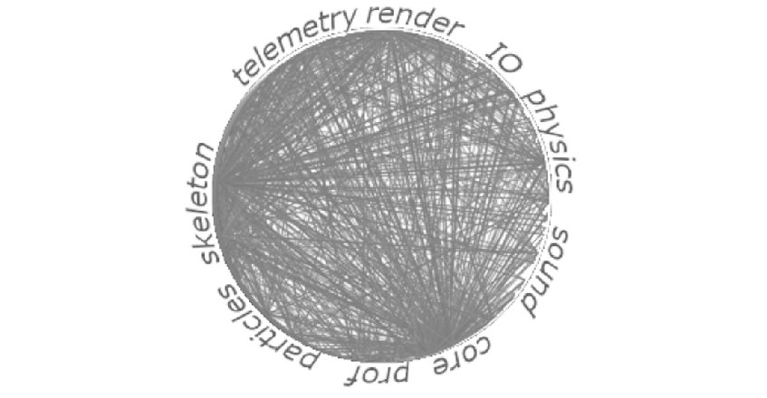
Before I tell you about game engine architectures, I thought it would be useful to say a little about how I understand software architecture and how it relates to games. First, architectures do exist, whatever lies you've heard about game development. Second, it turns out there's more than one of them. This will maybe help you understand why the rest of the articles are written in this order, or with no particular order. Worst case, when someone drags you into an argument about how disgusting (or, on the contrary, how stunningly brilliant) particular game engines and their architectures are, you'll have a couple of arguments and an understanding of what's what.
It's symbolic that the article on game engine architecture appeared after I'd already talked about strings, multithreading and the use of algorithms: that's just how it goes in life too — first we write code, an editor, a game, the skeleton of the project grows some flesh, and then the problems we'd all been ignoring catch up with us, because we had to ship at least something resembling a working version. But the fact that we ignored the problems and swept them under the rug of the backlog didn't stop them from being problems.
You won't get knowledge about allocators, containers, or the math behind a game's physics from this article. Nor do I aim to teach you how to apply A* partitioning in NPC pathfinding or model the reverberation of a room. Instead, there are reflections about the code between all of that. And not even so much about writing code as about organizing it.
This is part of the "Game++" series:
Game++. Building arcs <=== You are here
Every program has its architecture; "shoved everything into main() and it kind of works" is also a kind of architecture, so I think it'll be more interesting to talk about what makes a game engine good.
Nobody writes a game engine just for the sake of it; it's born either during the making of a game, out of a need to formalize, safeguard and preserve separate parts of the game for later reuse. In that case an editor appears, a resource build system, separate I/O, the renderer is broken out into its own system and much more — and a group of people responsible for maintaining the editor and the engine appears all by itself. Usually this happens after the game ships and you realize you can't keep living like this and it won't work otherwise.
The second option is when the game itself is also the editor, the engine and the build system that can assemble itself into finished levels and logic. All game engines and editors came out of games; some games (and then the engine-editors) became successful, and the teams, riding the wave of success, figured they could get extra time for development.
By this time a person usually appears in the team (grows there, or, more rarely, is invited) who defines, refines, manages and controls the components inside the game-engine, ensuring their interaction and integrity within the whole system. You can call him the Architect, but more often he's the Elder of the programming part of the studio, the one who got to work with QA, programmers, designers and other people more than anyone else.
Every working day for the last decade or so I've been looking into the code of games — different games, and different engines, mostly large and fairly mature in terms of development time. Of course, like any programmer who has spent a long time in a particular field, I have a sense of good design. I think everyone has lived through moments when the code they saw was so bad that the best thing you could do with it was to lay it to rest in the comments and rewrite everything next to it. "Best," however, doesn't mean "approved by management" — old, awful legacy code is usually relatively well tested and you know where the landmines are buried, whereas with the new code you still have to discover them.
Few of us have been lucky enough to work with perfectly designed code. That very code, project or engine that feels like a luxurious American sedan from the '70s, which has everything, you just need to know where it's kept, ready to hit a hundred with a light touch of the pedal to the floor. And so, working with different codebases, I began to notice that game engines resemble the teams that write them. When a team grows beyond five people, they start organizing their work, and that often leads to splitting tasks and responsibilities based on each member's technical abilities. Everyone does what they can and know: the internal DB, render, physics, the editor, tests and so on. Such a division looks quite logical from an organizational standpoint — everyone in their place, which helps reduce the load and increase efficiency. Seemingly so, but there's another effect: the division leads to different parts of the system being unable to interact effectively, and development becomes harder, because specialists work in isolated subsystems without talking to each other about important matters. This artificial division ultimately impedes the sharing of knowledge and leads to weak integration between the components of the game engine.
This regularity between the structure of an engine and the internal organization of the team was noticed back in the 1960s by Melvin Conway. Conway's Law, which Melvin Conway formulated in the late 1960s, states that the structures of an organization that take part in designing systems ultimately influence the architecture of those systems. Put simply, it's hard for organizations to create systems that would be structurally or functionally independent of how those organizations organize their communications. And this applies not only to game engines, it applies to any software made by a team. When programmers or architects design a system, they unconsciously reproduce in the code structure the same divisions that exist within the organization itself. If the development team is split into several parts — one works on the frontend, another on the backend, a third on the database — then the system will be riddled with the same divisions. With game engines it's the same thing, it's a mirror of our communications inside the studio, company or team.
Inverse Conway Maneuver
To fix software architecture, Jonny LeRoy proposed changing the communications inside the team. The idea is that, to create a more harmonious architecture, you need to evolve the structure of teams and the organization in parallel with the system architecture. That is, instead of building a system that will reflect the organizational "weaknesses," you need to change the organization in such a way that it fosters the creation of a more integrated and flexible system.
For example, if the system architecture requires tight integration between different parts — say, between gameplay and render — then instead of forcing those teams to work separately, you should organize them so that they interact with each other directly. This may include creating combined groups, pair programming or cross reviews, which will lead to better knowledge sharing and changes in the architecture.
Unity
When I first encountered Unity — specifically the guts of the engine, not the look of the editor — it was, to put it mildly, a shock. I expected a game engine that had conquered the mobile world to have a sane architecture, some kind of development plan, and instead I saw a patchwork quilt of components with three build systems (this was 2014, things could have changed, but I don't really believe it), somehow stitched together and smeared with glue in the form of mono-vm, just so it'd work, with a pile of platform crutches and comments in the style of "Don't remove this space," "Don't compile on Independence Day" or "First build with this constant, if it doesn't compile — set it to 0." To build the engine and the editor there was a separate wiki page with 117 steps laid out, what to do in what order, which libs to build first, which to rebuild again at step X, which flags and options to set where and whom to pray to in case of failure.
But if you look at Unity's origin story, the questions should diminish. It all started with the development of their own game, GooBall, which in 2001 was conceived by students David Helgason, Joachim Ante and Nicholas Francis. Their studio Over the Edge Entertainment ran into the typical problems of indie developers of the early 2000s: expensive engine licenses, complex code and a lack of resources. The guys made the game, but four years of struggle ended in failure, the game didn't really sell. On the basis of that game's sources, those approaches and that team, Unity appeared.
In 2005 Unity 1.0 is brought to an Apple conference, but without loud announcements. The engine, tailored for Mac OS X, in theory shouldn't have taken off in a world of gamers hooked on Windows. But that's exactly what became its trump card: macOS was always popular among designers, and later the only option among the pioneers of mobile development for the iPhone. But the engine had something to show: instead of complex programming systems there was a component-based approach — objects were assembled like Lego from ready-made blocks: physics, animation, scripts. A visual editor, rare for the mid-2000s, let you literally drag scene elements with the mouse. And support for C# and a simplified UnityScript didn't make you strain too hard when scripting. The industry noticed the engine.
The turning point came in 2008, when Unity launched on Windows, multiplying its audience tenfold. But the real liftoff happened two years later, after the launch of the Unity Asset Store — a marketplace of ready-made models, textures and scripts. And given that most of the junk cost a buck, or was outright free, it became manna from heaven for indie studios and solo enthusiasts. At the same time the engine added iOS and Android support, which coincided with the smartphone boom. Suddenly anyone with a laptop and an idea could create a mobile trinket. That's how Temple Run (2011) and Monument Valley (2014) appeared. A year later, in 2011, EA, Blizzard and Ubisoft took notice of the engine, signing long-term support contracts and licensing it (effectively buying the sources) for internal use. By 2015 almost half of mobile developers were using Unity.
But under the hood it all still remained a patchwork quilt of libraries, three different build systems, a fleet of reinvented wheels for everything, with partially usable EASTL, boost and the C++ standard library — and different parts of the engine could use different STLs, which trivially led to the need to copy data, for example, between the renderer, which lived on EASTL, and the editor core, which used custom classes and containers. Add to that the Mono nailed onto the side, with which you had to share data, and we get the classic game engine architecture of the early 2000s. To not be too much of a "meanie," I'll call such an architecture unitary (Unitary). In the English-speaking segment there's a more precise definition for such projects.
Big Ball of Mud
Americans call this style of writing code without a clear structure by the term «Big Ball of Mud» — it's an antipattern described in 1997 by Brian Foote.
A "Big Ball of Mud" is a haphazardly structured, sprawling, slapdash mass of incompatible components. Such systems show unmistakable signs of unregulated growth and hasty fixes. Information is shared promiscuously among distant elements of the system, often to the point where nearly all the important information becomes global or duplicated. The overall structure of the system may never have been well defined. If it ever was, it may have eroded beyond recognition over time. Programmers with even a drop of architectural sensibility avoid such quagmires. Only those who are indifferent to architecture, and who are content to put up with the daily drudgery of patches barely holding back the chaos, agree to work on such systems.
— Brian Foote
In modern realities, "unitary architecture" can describe, for example, a simple game where event handlers are directly tied to calls into the processing logic, without any internal buffering or dispatching. Most games start that way, which eventually leads to manageability problems as they grow. For a game of three mechanics and a couple of screens this isn't a problem, but the lack of structure eventually makes changes ever more complex, and the system itself suffers from problems with deployment, testability, scalability and performance.
Such an antipattern is found everywhere. Rarely does anyone plan to create a "unitary architecture," but many projects slide into it due to a lack of control over code quality and structure. In such a system any change in one class leads to unpredictable side effects in others, turning improvements into a nightmare. In the worst case, by the end of the project there will be a mess of source files, resources and the engine's technical files. What started as a project of three students is now maintained by a team of 400 engineers. Unity Technologies consists of 5,000 employees, and fewer than 10% of them are programmers. Below is a diagram of the parts of Unity Engine; at a glance it looks decent and even not bad...
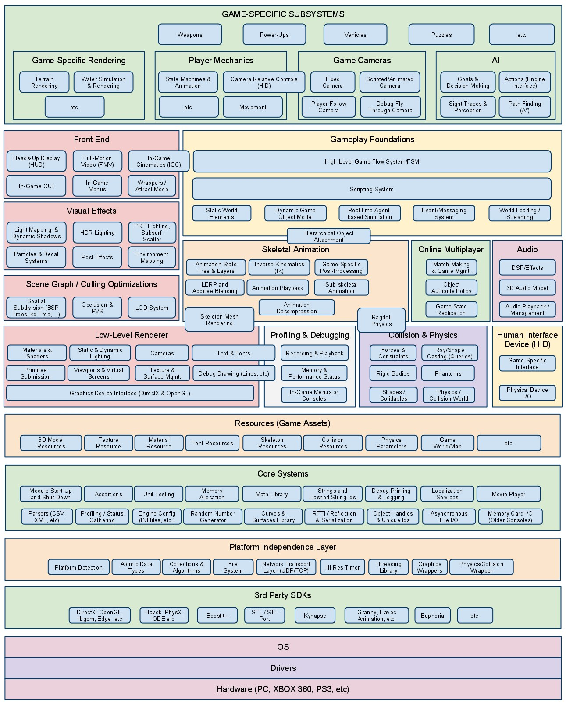
...until you climb into the C++ guts of the engine and try to change something. And this is a class connectivity diagram from the engine's internal wiki; each chord is a connection between the data of different classes and the subsystems shown in the picture above.
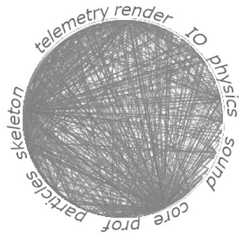
Don't read
This isn't the first time I've spoken about the quality of this engine; the engine is excellent for the end user, otherwise half of mobile developers wouldn't use it, but when I recall the times of fixing the shader compiler, I want to go on a bender forget this nightmare as soon as possible. Don't mind me, this is just whining and "childhood traumas."
Unreal Engine
In 1991 Tim Sweeney, the founder of Epic Games — then just Epic MegaGames — started creating editing tools for his first games. It all began with an adventure puzzle game with very simple graphics called ZZT.
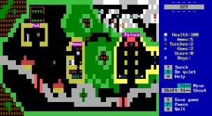
There you had to fight various creatures and solve puzzles in maze-like top-down levels. Using simple ASCII characters to visualize characters, enemies and the environment, ZZT ran in DOS text mode. At the time the game wasn't considered revolutionary in terms of graphics or gameplay, but Tim Sweeney's approach to programming and especially the built-in level editor ZZT-OOP laid down the principles of modularity that later evolved into Unreal Engine.
In 1992 Epic released Jill of the Jungle — a platformer for DOS, where more advanced tools appeared, like sprite animation, movement physics and particles. But the main thing was the emphasis on the component-based approach: Tim used data structures based on standard components — already, probably, an engine's — which allowed overriding object behavior without rewriting all the code. You could create new enemy types, change their AI or add interactive level elements via scripts.
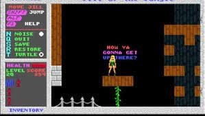
While most studios wrote code relatively "from scratch" for each project, Tim's approach was to split the game into the "engine" (low-level rendering, physics and sound systems) and the "content" (resources and logic). This approach was later implemented in Unreal Engine, announced in 1998 with the game Unreal; the very first engine-game already consisted of independent components — a common part, the renderer, the UnrealEd level editor on top of that, and separately there was the scripting language UnrealScript — object-oriented, with class inheritance, which made mod creation easier.
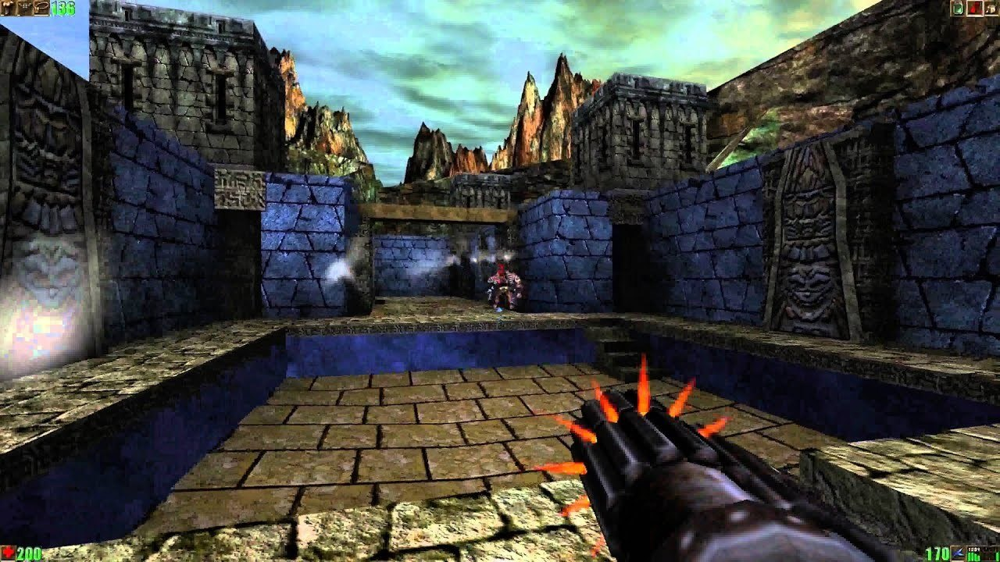
Other features included collision physics with dynamic objects, 16-bit color, dynamic lighting from up to three sources, and launching the game from the level editor. The game became a huge success, selling more than 1.5 million copies. In 1999 Epic releases its second game — Unreal Tournament, which was effectively a fixing of mistakes, adding, however, network support built into the engine.
The second version of Unreal Engine debuted in 2002 with the game America's Army — a free multiplayer shooter created to boost the popularity of military service. It was the first time the army used large-scale game technology not for internal use; the game even received several awards, including "Best Use of Tax Dollars" from Computer Games Magazine and "Biggest Surprise of the Year" from IGN.
Layered architecture
Layered architecture, also known as the n-tier or component-based approach, is one of the most common when organizing code in game development. Despite the fact that Unreal Engine was developed for a long time in the style of one particular person, it remained workable for a large team too, providing structure and scalability for the engine and its parts. Look at how the connections between the engine's components are organized; yes, of course there will be additional connections between different parts, but there are an order of magnitude fewer of them, and the community constantly fixes and corrects the bugs that are found.
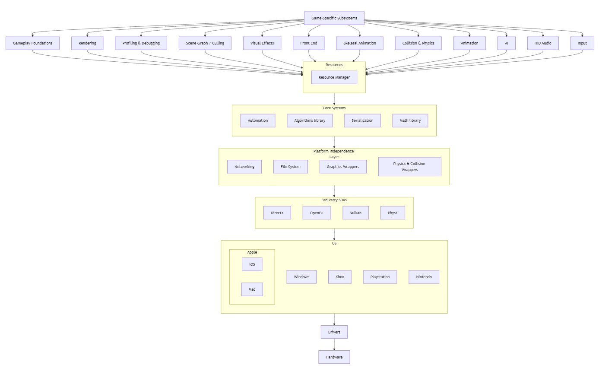
And such a layered architecture naturally mapped onto the component system. Each component, be it an Actor, Blueprint systems or C++ classes, forms separate levels of abstraction, which becomes the de facto standard of development and the foundation of the architecture of the game itself for most game studios that use this engine.
The main layers
Game-Specific Subsystems
Gameplay Foundations
Rendering, Profiling & Debugging, Scene Graph / Culling, Visual Effects
Skeletal Animation Collision & Physics, Animation
AI, HID Audio, Input
Resource Manager
Core Systems
Platform Independence Layer (Networking, File System)
3rd Party SDKs (DirectX, OpenGL, PhysX)
Hardware
According to Conway's Law, the structure of the code reflects the communication structure of the development team. The Unreal development team is split into small groups: UI and user input, gameplay logic programmers (creating gameplay systems), AI engineers, who are responsible for the ability to write your future NPCs, objects and monsters, and a large team of engine optimization engineers. This organizational structure naturally carries over from the project level to the level of the team that directly makes the game. Individual developers can, if they wish, fill roles in different groups, or intern and move from group to group — such is the company's policy.
But people remain people, development on Unreal is very relaxing, and it happens that teams slide into a "default architecture," when they just follow the engine's templates and accepted practices without much thought about why all of it is needed. It's worse when a "unitary architecture" starts appearing in the project and the team just "starts coding" without a clear plan. For a while they'll unconsciously implement the layered approach that the engine carries, but without proper structure and support it will all eventually come to a "Big Ball of Mud."
As of 2023, Epic Games employs around 4,000 people worldwide. This includes teams working on games, publishing, the store and the engine itself. By various estimates from open sources, between 500 and 1,000+ specialists work directly on the engine. But the company counts here, besides the programmers working on graphics, physics and optimization (about 200 people), also technical support engineers who maintain the repo on GitHub and accept new commits, tech writers and course engineers, platform developers (VR/AR, mobile) and a large department that develops the Virtual Production direction, CAD integration and the wishes of large game and film studios (another 400 or so people).
If you're interested in reading about game engine architectures, I advise you to look at the series of articles about the Quake engine.
https://fabiensanglard.net/quake2/quake2_software_renderer.php
https://fabiensanglard.net/quake2/quake2Polymorphism.php
https://fabiensanglard.net/quake2/quake2_software_renderer.php
https://fabiensanglard.net/quake2/quake2_opengl_renderer.php
Microkernel architecture
In the early 2000s, when developers were looking for ways to create ever more realistic and immersive game worlds, a unique game engine with a fundamentally new approach to architecture appeared on the scene. CryEngine, developed by the German studio Crytek, became revolutionary not only thanks to its stunning graphics but also due to its innovative microkernel architecture.
It all started with a small tech demo called "X-Isle: Dinosaur Island."
The tech demo, created by the three Yerli brothers (Cevat, Avni and Faruk Yerli), caused a sensation among publishers and developers. At the time most game engines were based on a monolithic architecture, where components were tightly coupled, but the brothers had a different vision. Inspired by the concepts of QNX, they brought the principles of microkernel architecture to a game engine, which laid the foundation for what would later turn into one of the most technologically advanced game engines of its time.
Investors and studios believed in this approach, where CryEngine isolates only the critical functions in the central core, while the other components work as separate modules. This modularity allowed components to be swapped without risk to the stability of the whole system; moreover, at some point there were implementations that allowed reloading individual DLLs at runtime right while the game was running, which made it possible, for example, to update NPC behavior without pausing the game, fix logic bugs without a restart, and only truly critical errors led to a crash. But even in that case there was a fallback to a standard module that allowed reconnecting the crashed component and continuing to play. Besides this, such an approach allows developing new features in parallel, debugging and optimizing subsystems without the need to rebuild the entire engine. The brothers pushed the idea of creating games of various genres on a single technological base, but something didn't click, and the engine remained "the best engine for FPS."
The first commercial game to demonstrate the power of the microkernel approach was "Far Cry" (2004), which amazed with its huge open spaces, draw distance and realistic vegetation, and a world that could dynamically adapt to the player's actions. The second version of CryEngine, used in the game "Crysis" (2007), became the de facto technological benchmark for new generations of graphics cards, setting the bar for graphical performance, and the phrase "But can it run Crysis?" became a meme among gamers.
This particular engine's microkernel approach influenced all of game development, bringing concepts such as scalability, fault tolerance and adaptability of porting to new platforms and architectures. It also influenced other engines, which began adopting individual approaches for development. Essentially, after the release of the second Crysis, scalability and adaptability became part of ordinary practices in game engine development in general.
The modern CryEngine continues to develop these ideas, but moving more toward an ever greater use of artificial intelligence for tooling, and of course the eye candy. Nevertheless, the microkernel philosophy laid down by the Yerli brothers influenced the game industry, showing that modularity, flexibility and scalability can go together with high performance.
Now the engine has effectively moved to an open-source model — https://github.com/o3de/o3de, which is the evolution of the Amazon Lumberyard engine, which, in turn, was based on CryEngine 2015. Amazon bought the CryEngine sources, cleaned up the code and posted it on GitHub, first as the licensable Lumberyard sources, and later handed it over to the community in the form of O3DE for free. By the time it went open source, around $50 million had been poured into the engine, which by some calculations is even more than for Unity/Unreal, or at least comparable to the cost of their development.
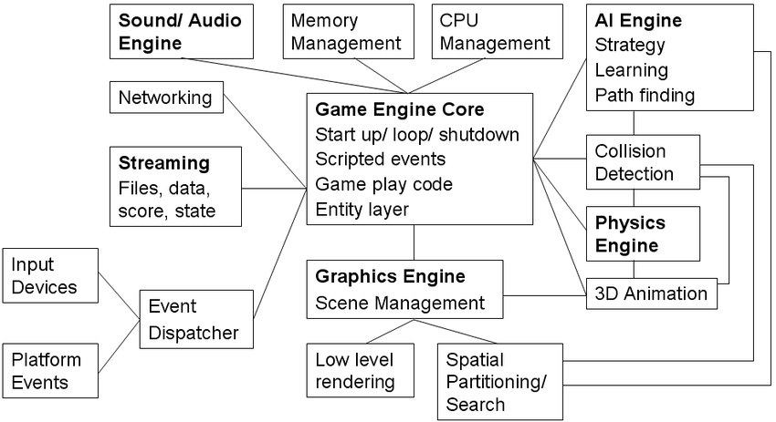
The micro-modular architecture is now represented in the form of independent components — gems — that can be arbitrarily added to or removed from the project. Amazon and later the community added a full-featured editor with visual tools, which requires almost no programming if you only use the editor's tooling, and a scripting system (Lua and Python) for creating game logic without the need to wrangle the guts and C++ code. As of today O3DE is still in an active phase of development. Although the engine is very functional, it isn't as widely used as Unreal or Unity.
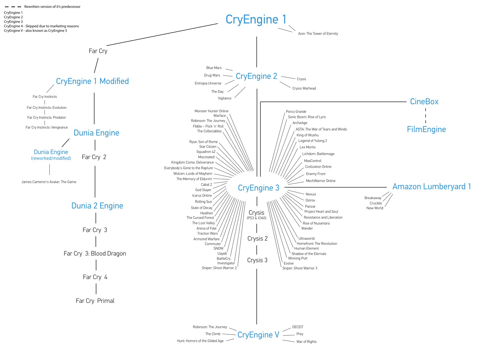
Dagor
Among the renowned game engines, predominantly of American registration, there are nevertheless developments from our guys too that have had a significant impact on the industry. One such technology became Dagor Engine, developed by Gaijin Entertainment. This engine is notable not only for its technical capabilities and its ability to run on any potato (there was a news item somewhere that it was even launched on Elbrus chips), but also for its unique approach to architecture based on data-driven design principles. The engine is now open source, so you can see for yourself what's what (https://github.com/GaijinEntertainment/DagorEngine).
The little engine started its history in the early 2000s as an internal tool of the studio for developing their own games. It became known after the release of the flight sim "IL-2 Sturmovik: Birds of Prey" (2009), where it demonstrated the ability to handle complex physics models and create realistic visual effects, and also showed the possibilities of data-driven approaches.
Data-Driven architecture
Data-driven architecture is an approach to software development in which the application's logic is defined predominantly by data rather than hardcoded in C++. In the context of game engines this means that most of the game world, the objects and their behavior are described in data files (often in JSON, XML or other structured formats) that are interpreted by the engine at runtime, which brings certain advantages: separation of data and code, declarative definition (objects, their properties and interactions are defined in a declarative style describing "what" to do, not "how" to do it), dynamic configuration (changes are made without the need to recompile the code or even reload the game).
All these properties naturally grow into a component system that is defined and configured through data files. If in traditional engines changing the behavior of game objects often requires writing or modifying code, compiling it and subsequently testing, here game designers and artists can modify object parameters, effects and even basic behavior by editing data files, on the fly as they say. The example is so-so, of course, but I myself saw, at an internal Cuisine Royale tournament, the tournament admins spawning random level objects during the game, just by dropping blk files (an analog of JSON) into the level folder; as a result, cars, weapons, refrigerators and a couple of tanks rained down on people from the sky. Data-driven architecture naturally supports the component-based approach to designing game objects, and over time you start thinking in this paradigm yourself and can't imagine how you could have worked any other way.
Each object in Dagor Engine can be composed of a set of components, each of which is responsible for a particular aspect of functionality. This approach makes it easy to create new variants of objects by combining and tuning existing components, and again I'll repeat that all of this is done on the fly without recompiling the engine and often even without restarting the game.
Contrary to the widespread belief that interpreting data at runtime slows down the game, a proper implementation of data-driven architecture can provide high performance. Indirectly, but you can judge this by the ability to run a tundra-level game with acceptable fps on the Nintendo Switch, and that's far from the fastest hardware.
One of the cornerstones of data-driven architecture is the resource system. All game data is organized as a hierarchical structure of configs, each of which has a unique identifier and can be loaded on demand. Using Dagor Engine as an example, it might look like this:
/data/
/vehicles/
/tanks/
/t-34/
model.blk
textures/
diffuse.dds
normal.dds
specular.dds
weapons.blk
collision.blk
damage_model.blk
/weapons/
/guns/
/85mm_zis/
ballistics.blk
visual_effects.blk.blk files are a special format of structured data used in Dagor, which is functionally similar to JSON but optimized for fast loading, processing and the ability to override sections and properties. When loading, the game can override an object's properties from another config; it will look something like this, and in the final config you'll get rendinstDistMul = 0.8:
// visual_effects.blk
graphics{
enableSuspensionAnimation:b=no
rendinstDistMul:r=0.5
grassRadiusMul:r=0.1
}
// visual_effects.@1.blk
graphics{
override@rendinstDistMul:r=0.8
}Despite all its advantages, data-driven architecture also has substantial drawbacks. First — the difficulty of debugging: since behavior is defined by data rather than code, debugging becomes very labor-intensive, requiring specialized tools to track how changes in data affect the system's behavior, and it often leads to maintaining, in parallel, visual debugging tools specific to a particular engine. Second — performance during interpretation: although the engine may be optimized for efficient data processing, interpreting data still adds overhead compared to hardcoded logic.
X-Ray Engine and the monolithic architecture
In the history of the game industry there are quite a few technologies that were ahead of their time. One of them is the X-Ray game engine, created by programmers Alex Maximchuk and Oles Shishkovtsov for the S.T.A.L.K.E.R. series. Although initially the game was supposed to be about robots on an unknown planet with a zone of anomalies and lasers, the guys later realized that you don't have to invent a planet and robots, and a zone with anomalies and the right atmosphere is a three-hour drive from the office. First demonstrated back in 2001, this engine became the technological foundation for one of the most atmospheric game universes in game development.
The engine's graphics part was impressive at release: high detail — up to 4 million polygons per frame, which was far above the figures of games even of the late 2000s; large-scale spaces — the engine worked equally efficiently both with enclosed rooms and with open areas of up to 2 square kilometers; a dynamic day-night cycle — a full day-night cycle with corresponding changes in lighting and weather effects, like a realistic simulation of rain, wind and fog. Special attention is deserved by the dynamic lighting system, which even today produces memorable frames and creates an unforgettable atmosphere.
For physics simulation X-Ray used the free Open Dynamics Engine (ODE), released in 2001. This open-source library provided a rigid-body dynamics system and a collision detection system, suitable for simulating vehicles, creatures and objects in a changeable world. Theoretically, thanks to the high stability of the integration, the system shouldn't have "exploded" without cause. However, players of the first Stalker are well acquainted with the numerous physics anomalies — from flying bodies to strange object behavior — which became a peculiar "feature" of the series, spawning memes and funny videos, but let it be a feature of the Zone — anomalies, after all.
The engine is a classic example of a monolithic structure — not to be confused with a unitary one — divided into parts whose connections are well minimized. Unlike other solutions, where systems work relatively independently, X-Ray is a tightly integrated system where all components are inseparably linked.
The monolithic architecture has both certain advantages and serious drawbacks. The tight integration between systems (graphics, physics, AI) and the ability to create gameplay mechanics based on the connections between components allow resources to be used and planned more efficiently through the use of custom allocators, object packing, fast message queues and so on. Direct interaction between components without additional abstraction layers provided maximum speed of operation on the hardware of the time. You can precisely manage memory and CPU time, which was critical for such a demanding project.
The unified architecture made it possible to realize a holistic vision of the engine, the game world, the tools and the subsystems, where everything interacts naturally. Put simply — it's an approach to creating software in which the various components of the system are tightly coupled and function as a single whole, and you can't remove or extract a separate part without losing functionality and reducing the speed of operation.
But what is a strength in terms of performance also limits scalability, adds difficulty to updating individual components, and causes certain problems, especially on multi-core systems. And the complexity of evolving such a system and fixing bugs in it grows exponentially, since changing one part drags along changes in its neighbors.
This very complexity became the main technical problem of X-Ray; besides the random crashes familiar to all fans of the series (hello, "green bug"), another problem was the micro-freezes and stutters observed in all the games of the series. They were especially noticeable in "Shadow of Chernobyl" and the popular Misery mod. In extreme cases the game could turn into a slideshow even at a normal frame rate. The root of the problem was in the engine's architecture, which relied on the resources of only one core, and this limitation became ever more critical with the arrival of multi-core systems.
Officially the last version of the engine is X-Ray Engine 1.6.02, used in "Call of Pripyat." However, the devoted community of fans didn't stop there. Enthusiasts took on refining the technology, creating unofficial versions of the engine in which many critical bugs were fixed, new features were added and, most importantly, support for multi-core processors and multithreading was implemented.
Despite the technical problems, the engine remains a significant milestone in the history of game development. Its strengths — dynamic lighting, well-developed physics, the A-Life life simulation system — were ahead of their time and brought plenty of wow moments to fans, and perhaps this monolith did, after all, fulfill someone's wish for a dream game.
The monolithic architecture, with all its advantages and drawbacks, and most importantly its thoughtful application, became a good example of a particular approach to game engine development, which is also a valuable lesson for the industry. Later Alex and Oles moved to another studio, but the concept of an engine can't change overnight, nor can experience and accumulated practices, so they got their further development in another series of games about the metro.
Godot and micro-modules
From the outside it may seem that game development advances at a breakneck pace: new approaches to rendering, the use of neural networks for animation, model forming and voice acting, but inside it relies on tried and tested solutions that are very, very hard to break or change. I'd even say that game development outside of conferences is very conservative; large studios don't want to take risks, and small ones simply don't have the money and time for it. Something truly new in the basic solutions appears fairly rarely. Against this backdrop, dragging concepts over from the world of the web becomes especially interesting, as happened with the Godot engine and microservice architecture.
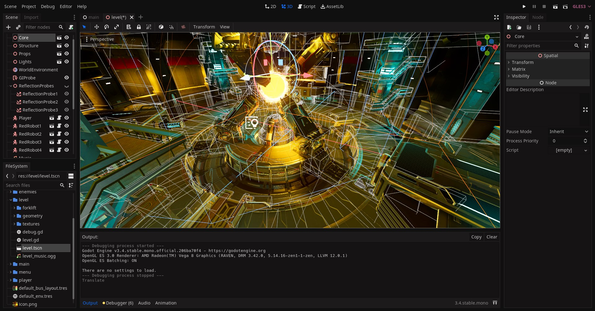
Most architectures get their names after the fact from the community or at conferences, where people notice a certain pattern and start developing it — there's no secret group of architects who decide what the next big movement will be. Rather, it turns out that many developers eventually arrive at similar solutions as the engine's ecosystem changes and develops. The best ways of working with these changes and extracting benefit from them become the architectures that others imitate. Microservices differ in this respect: there was no engine or game that used such principles, and the very term got its name and was popularized by the blog article by Martin Fowler and James Lewis titled "Microservices," published in 2014, where they identified common characteristics in this relatively new architecture, and I see that a great many ideas from there were reused in Godot. Its essence lies in dividing a complex system into many small autonomous services, each of which is responsible for a specific function.
In the context of development on Godot, this concept transforms into a "micro-modular architecture," where the game is not a monolithic hunk of code but a system of interacting components. Physics, artificial intelligence, the user interface, the audio system — each of these elements can be implemented as a separate module with a clearly defined interaction interface. I won't say that this approach seems ideal to me, but at the very least it lets you focus on individual aspects of the game without worrying about how changes will affect other parts of the project.
The engine appeared on the game-dev scene in 2014 and has since won the hearts of many developers for its simplicity and reliability. It was named after the famous character from Samuel Beckett's play "Waiting for Godot." Godot's uniqueness lies in its approach to organizing game logic through a system of nodes and scenes. Imagine a construction set where each element of the game — from a character to the interface — is a separate block that can easily be connected to others.
Although Godot wasn't initially designed with microservice architecture in mind, its node system and modularity mapped well onto microservice principles. In the end it all spilled over into a micro-modular architecture, where the various components can be developed entirely independently of one another.
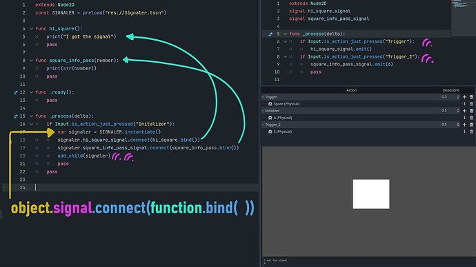
The signals mechanism in Godot provides a rather interesting way to connect components. Imagine the player picked up some item — the inventory system sends a signal that other systems can react to: the interface updates the display, the achievements system processes the progress of picked-up things, and the perks system recalculates the character's stats, and all this while none of these systems knows about the implementation details of the others, and possibly not even about their existence.
Essentially, the main idea of the engine is that new features can be added by creating new modules rather than changing existing ones. Module-components can be reused in other projects, and if a module contains a bug, this is less likely to affect the operation of the entire game — it will affect it, of course, a game can't be super distributed, but at least it will crash less often.
But you have to remember that this architecture isn't a panacea either. For small projects this approach turns out to be ideal: you toss in module-components, set up signals and voilà — everything works in the best possible way. As the project, the connections and the mechanics grow, they start to accrue excessive complexity and become unproductive, the signal system becomes a bottleneck, and the modules start to conflict over updates. And here you have to understand that the use of micro-modules is justified where they really bring benefit. For example, separating game logic from the visual representation is almost always justified, whereas splitting tightly coupled mechanics into separate parts-services-modules will come back to bite you later with unnecessary complexity.
And besides, unlike traditional microservices in web development, where they run as separate processes or even on different machines, in a game all the components function within one (a few) process. This frees you from the need to solve the interaction and synchronization problems characteristic of classic microservice systems, which, over such "short" distances, get more in the way than help.
Nevertheless, this approach finds its fans; over 2024 more than a dozen relatively large games came out on this engine. That's not thousands, of course, like Unreal/Unity, but a serious achievement for a project that is run effectively by five people and the community.
Which is better?
I've described only the engines I worked with in practice for a sufficient time, but there are far more of them, and each will have something special. I wish I knew which of them is better, but I have no answer! With so many available options, which exactly to choose — I don't know. It depends on a multitude of factors inside the project and on what kind of game you're developing, the availability of experience and people on the team. Despite everything that was said before, there's one rule that applies to any project and any architecture: make the game — a shipped game on a unitary architecture will be a hundred times better than an unshipped one, on whatever architecture it was made.
← All articles